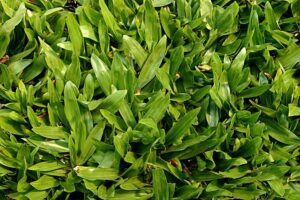

Encontre aqui a espécie de grama perfeita para sua obra

Grama Esmeralda
É a mais comercializada no Brasil. Linda de folhas finas, raízes firmes e profundas.

Grama São Carlos Plus
Ideal para áreas sombreadas e pleno sol. Folha larga e verde intenso.

Grama Batatais
Espécie rústica. Indicada para aterros, jardins públicos e locais com tráfego.

Hidrossemeadura
Mix de Sementes Hidrojateado. Indicado para aterros e montanhas.
Qualidade da grama que você só encontra Aqui
Produto de procedência e qualidade comprovada. Empresa com anos de experiência no mercado de gramas.